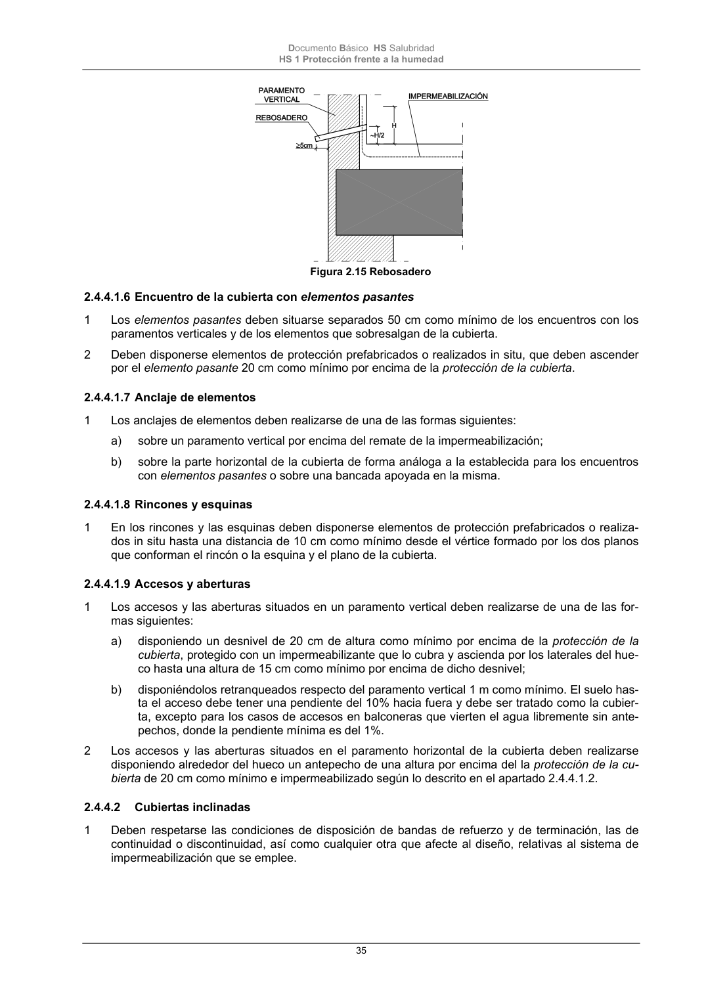

DB-HS · 2.4.4.1.8 Rincones y esquinas · versión 2022-06-14 · capa oficial
Formatos: JSON compacto · Markdown · PDF fuente
Ámbito del documento · texto del ámbito · documento y tablas
ID técnico a0083 · PDF pág. 35 · jerarquía no validada por persona · contrastado con el literal de la página 35 (candidato tipográfico); no validado por persona · padre: a0075
2.4.4.1.8 Rincones y esquinas 1 En los rincones y las esquinas deben disponerse elementos de protección prefabricados o realiza- dos in situ hasta una distancia de 10 cm como mínimo desde el vértice formado por los dos planos que conforman el rincón o la esquina y el plano de la cubierta.

PDF fuente redistribuible: copia fiel enlazada en esta página (SHA256 verificado).